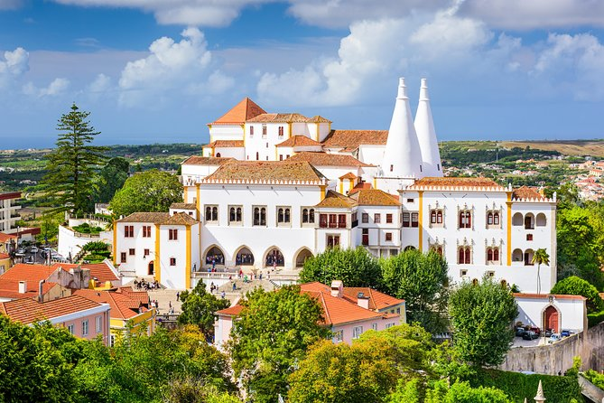
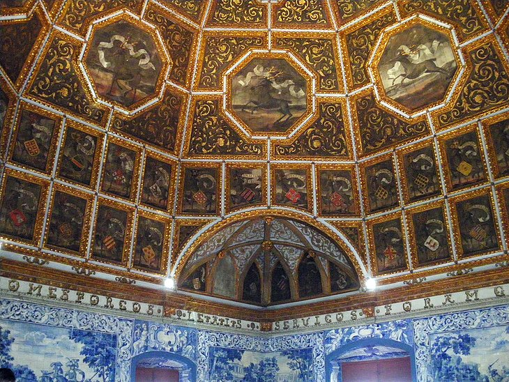

Europe's West Coast : Portugal
Portugal is a southern European country on the Iberian Peninsula, bordering Spain.
Its location on the Atlantic Ocean has influenced many aspects of its culture: salt cod and grilled sardines are national dishes,
the Algarve's beaches are a major destination and much of the nation’s architecture dates to the 1500s–1800s,
when Portugal had a powerful maritime empire.
Visiting Portugal is to discover a remarkably diverse destination.
Inextricably linked with the sea, the country has more than 800 kilometers of enticing Atlantic Ocean coastline.
Lisbon, the capital city, enjoys a stunning location near the mouth of the River Tagus.
From here, trailblazing mariners set sail in the 15th and 16th centuries on epic voyages of discovery,
and Portugal has nurtured a proud seafaring tradition ever since.
Portugal's interior melds dramatic northern mountain ranges with the vast rolling plains of the country's sun-baked central regions.
In the south, some of the best beaches in Europe flank picturesque coves and warm, shallow waters.
Dotted throughout are stone-built villages, enchanting towns, and cosmopolitan cities where historic palaces and castles,
museums, and monasteries are waiting to be explored.
How to Get Around Portugal

Public Transit – The larger cities like Porto and Lisbon have great public transit options, including trains, trams, and buses.
Tickets start around 1.50 EUR (1.70 USD). In smaller communities, people generally use the public bus, and fares are about the same.
Taxis are affordable for short distances, and are metered. Fares start at 3.25 EUR (4 USD) plus about 1 EUR (less than 2 USD) per kilometer.
A taxi trip shouldn’t cost you more than 12 EUR (14 USD)!
Trains – Portugal has a great rail system. Ticket prices are affordable, costing usually about 20-40 EUR (23-45 USD) to go
from Porto to Lisbon. Even the high-speed rail is affordable, unlike other European countries – it’s about the same price between Porto and
Lisbon as the regular train. A train trip between Braga (in the far north) to Faro (at the southern tip) will cost about 40-50 EUR (45-55 USD)
for both high-speed and regular rail options.
Bus – Buses are the cheapest of all the options, and since Portugal is on the smaller side, it’s also not too time consuming.
A cross-country bus from Lisbon to Lagos will cost between 20-40 EUR (25-45 USD), while an eight-hour journey from Braga to Faro starts at
30 EUR (35 USD). There are many private bus companies, including:
Rede Expressos
Rodonorte
Eva Transportes
Budget Airlines – Flying is also the best way to get to the islands, like the Azores and Madeira Island.
A flight from Lisbon to the Azores costs as little as 30 EUR (35 USD), while Lisbon to Madeira Island starts at about 35 EUR (40 USD).
TAP Air is Portugal’s official airline, but other budget airlines like Ryanair and EasyJet also service Portugal.
Ferries – You can ferry between the Portugal mainland and the islands as well.
The Porto Santo Line services Madeira Island while Atlânticoline services the Azores islands.
You can find routes for as little as 20 EUR (22 USD), while other popular routes like Funchal in the Madeira Islands to
Porto Santo Island starts around 35 EUR (40 USD).
Places to Visit
Mosteiro dos Jerónimos

The church and monastery embody the spirit of the age, and feature some of the finest examples of
Manueline architecture found anywhere in Portugal; the beautifully embellished decoration found on the
South Portal is breathtaking.
Inside, the beautiful cloister is equally exuberant.
Appropriately, the church houses the tomb of Vasco da Gama and other national figureheads,
including Luís de Camões, Portugal's greatest poet and chronicler of the discoveries.
Palácio Nacional de Sintra

Nestling in the lap of a wooded mountain range, Sintra's stunning location is reason enough to visit this charming, verdant town.
Indeed, UNESCO acknowledges the destination as a World Heritage cultural landscape such is its beauty
and the significance of the collection of historic visitor attractions clustered in and around the old town, Sintra Velha.

A favorite summer retreat for the kings and queens of Portugal and an alluring destination for numerous writers and poets,
including Lord Byron and William Beckford, Sintra exudes romance. The old town is a maze of cobbled lanes lined with handsome
town houses painted in pastel hues of pink, mustard, and lilac. The narrow streets surround a pretty central square that's
dominated by the wonderful Palácio Nacional de Sintra.
Torre de Belém

One of Portugal's best-loved historic monuments and a Lisbon icon, the Torre de Belém stands as a symbol of the Age of Discovery
and the voyages of exploration undertaken in the 15th and 16th centuries.
Completed in 1521 as a fortress to defend the approaches to the River Tagus, the tower is regarded as a masterpiece of military architecture.
Designed in the Manueline style by Francisco de Arruda, the façade is a confection of beautifully carved stone, typified by maritime motifs,
such as twisted rope and the armillary sphere. An impressive Renaissance loggia heightens the decoration.